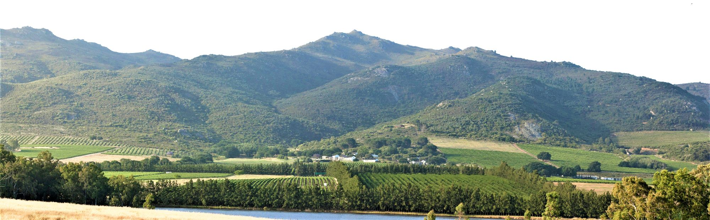
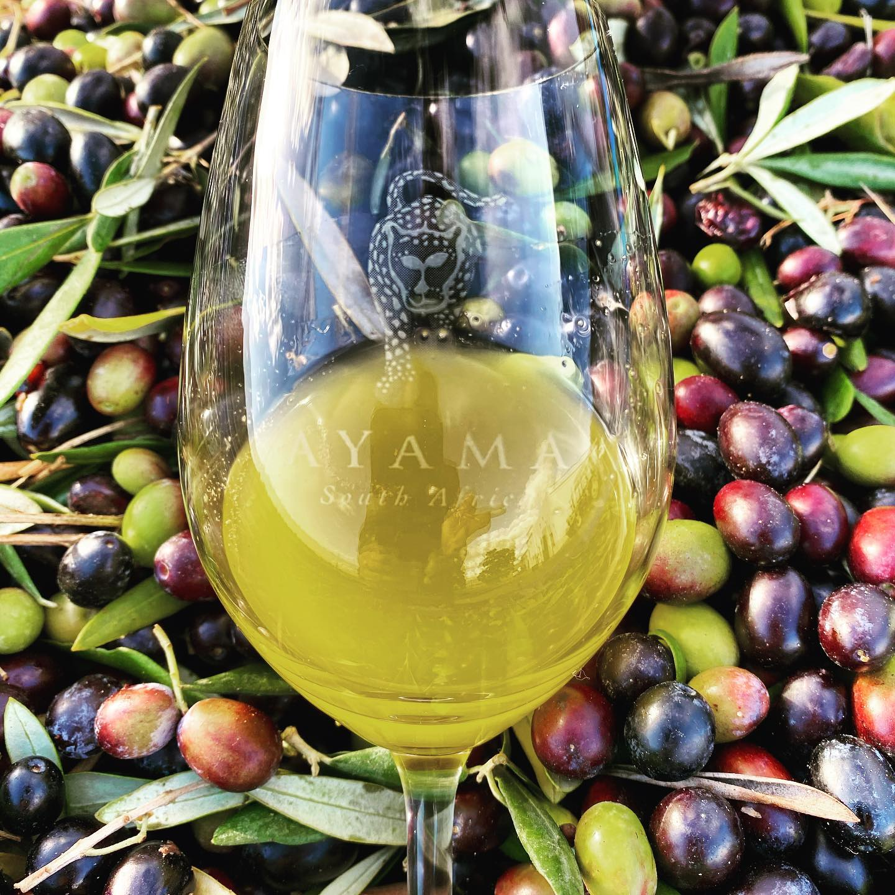
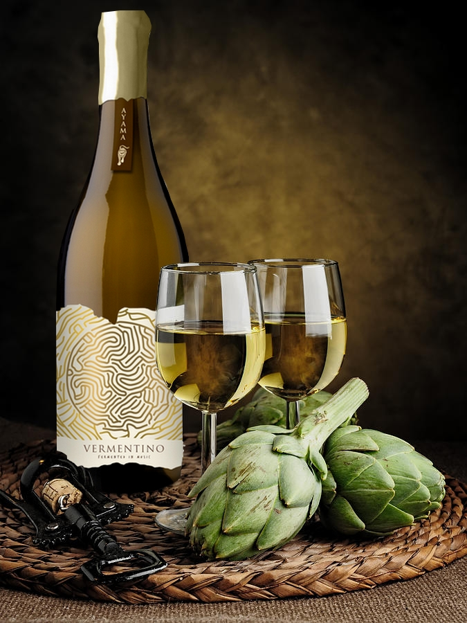
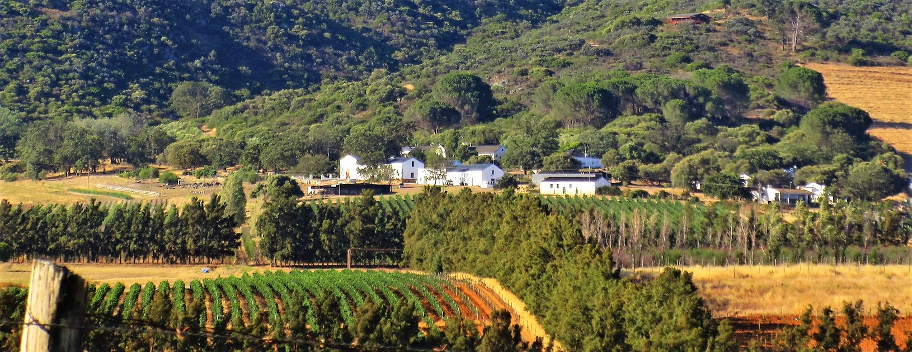
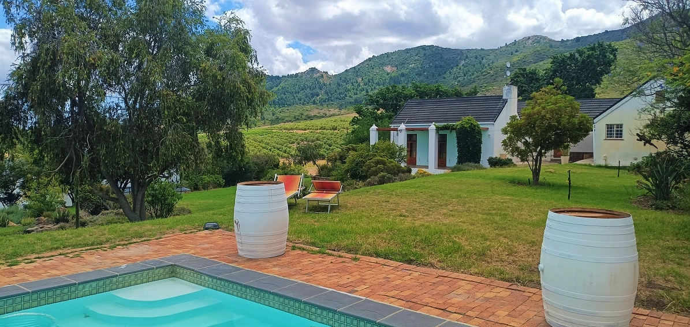

Vermentino
WHITE WINEItalian roots. A South African first.
A WILD KIND OF WELCOME
A little corner of South Africa.
A whole lot of Italian heart.
Pull the goggles. Meet the wild.DRAG DOWN, CLICK OR SCROLL
At the foot of the Paardeberg, Italian curiosity meets South African soil. This is Slent: a historic farm where wine, good food and a love for nature bring people together.
First settled in 1685, our corner of the Cape has a long story. We’re here to share its next chapter.

Italian roots. A South African first.
Dark fruit. Fine tannins. Quiet character.
A Sicilian spirit, at home in the Cape.

Hand-picked olives. Cold-pressed within an hour. Unfiltered and full of character. Our extra-virgin olive oils are another expression of the land we call home.
Unhurried wine tastings, Italian-inspired food and a farm shop full of good things. There’s always a reason to spend a little longer at AYAMA.
Open every day. Kitchen closes at 15:00. Booking recommended. Groups of 8 or more: book and confirm at least 48 hours ahead.
Save a place at the table ↗
la dolce vita,

Wake up in the countryside. Settle into our eighteenth-century Manor House, or make yourself at home in an Artichoke or Harvest cottage.
Find your little escape ↗From weddings to a gathering of your favourite people, discover three farm venues with a character all their own. Come for a private visit and find your place.
Let’s plan something special ↗